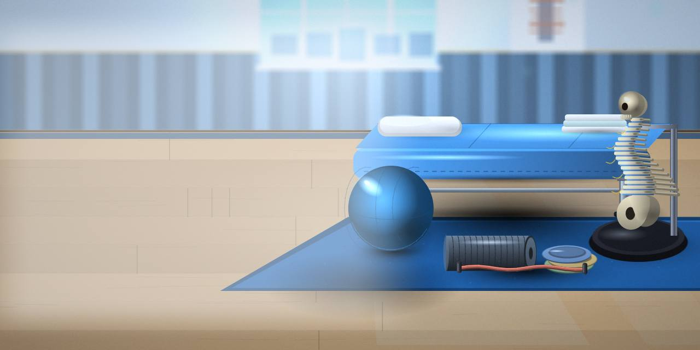
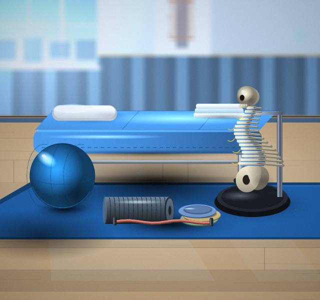
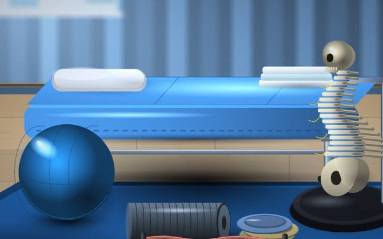
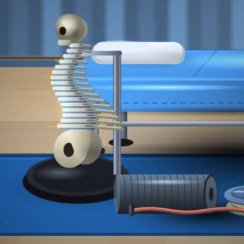
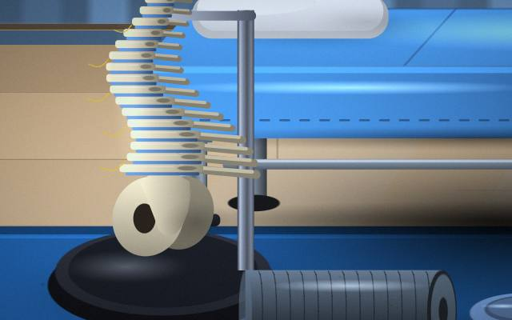
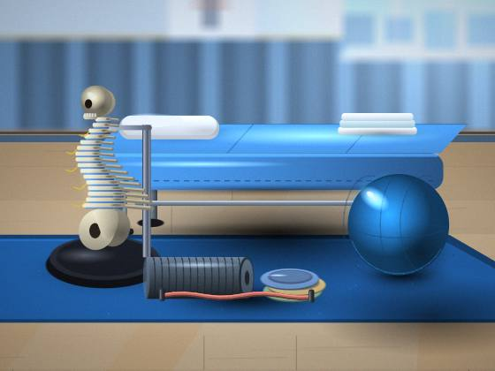

Stretches
We will explain Stretches in plain words.

Physiotherapy Centre · Surat
A real person replies to every message.

Small questions are welcome too.
You will find us in Surat. Bring any earlier reports or scans to the first visit.
We will explain Stretches in plain words.
Message us about Taping; we reply to every enquiry.
If Programs is on your mind, book a visit and we will talk it through.
Not sure about Rehabilitation Plans? Start with a short conversation.
Treatments begins with a conversation about what you need.




Call or message us to book; bring earlier reports if you have them.
We confirm what happens and when.
A plan you can follow, reviewed as you improve.
A walk through the consultation, from the first question to the plan.
A simple way to stay organised.
Questions that make quotes easier to compare.
We're in Surat; get in touch for directions.
Send us a message and we'll explain the options.
Feel free to ask us at the time of booking and we will explain the options.
Certainly; share the details and we'll take it from there.
A conversation is the best first step.
Book an appointment